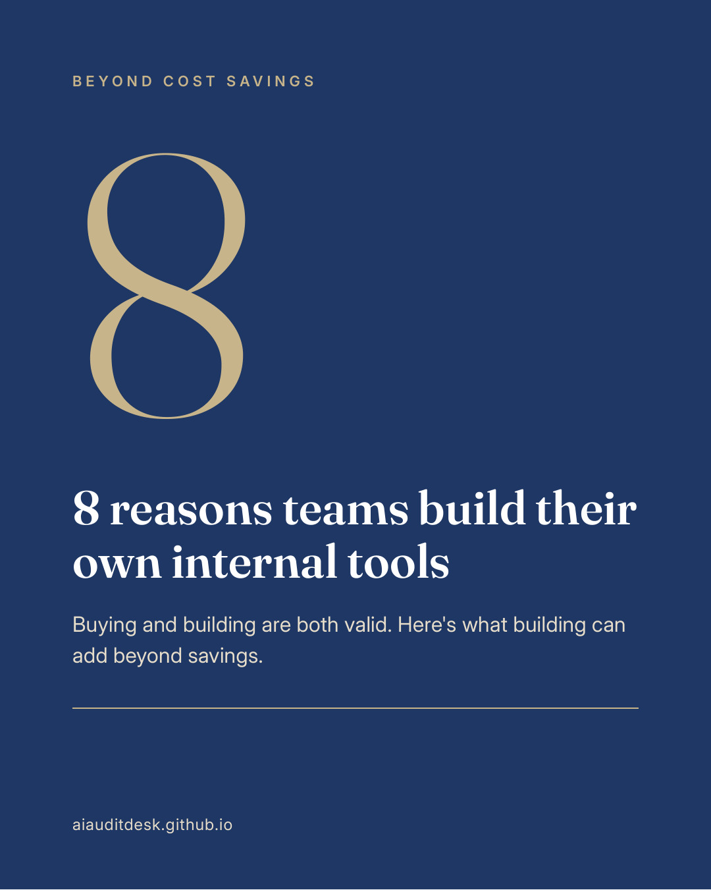

Beyond cost savings: 8 reasons teams build their own internal tools

Build vs. buy isn't only about cost. Buying and building can both be the right call, and building can bring other gains too.
Here are 8 reasons a team might consider building its own internal tools. They're also in this carousel: 8 reasons (PDF).
- Off-the-shelf software doesn't always fit. Some workflows have no good tool, so they run on manual steps and spreadsheets. Other teams pay full price and use only a fraction of it.
- The numbers end up in one place. Data spread across systems and spreadsheets can come together in one live view. One place makes it easier to layer insights and alerts on top of the data.
- An audit trail can be built in. Records can trace back to their sources, with timestamps.
- Fewer manual errors. Built-in validation can flag issues early, such as miscoded time or totals that don't match subtotals.
- You can change it when the business changes. Improvements don't have to wait on someone else's product roadmap. Small improvements can go live in days, not quarters.
- Live numbers support faster decisions. Reporting can move closer to real time.
- People may be more likely to use it. A tool built around how a team works can be easier to adopt.
- It can fill gaps around the software you already use. Custom tools can sit alongside existing systems, rather than replacing them.
As mentioned in the last post, some companies report savings after building their own custom tools that better fit their processes.
Consider your options first
Building isn't automatically the best answer. If vendors already fit the need, start with a demo or two:
- Book a demo. Most are free, and you're not committed to buying. The main cost is your time.
- Check the fit. Understand their features, whether the product fits your goals and work, and what it's like to use.
- Ask questions. For example, how your data is stored and protected, whether there's a security report you can review, and what each plan includes.
- Consider a pilot. See whether a short pilot is available and makes sense, and review the software's pricing and any AI-specific terms.
If you build an internal tool, test it rigorously before rollout, including unusual inputs and real-world use. The goal is a tool that works reliably for everyone who uses it, not just the person who built it, with appropriate governance.
Custom internal tools are pieces of a larger AI strategy that can include chat assistants, agent teams, voice agents, and automated workflows. An AI consultant can help maximize the use of AI and map how the pieces fit together.